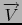
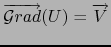

suivant: Champ à flux conservatif
monter: Les expressions de plusieurs
précédent: Le rotationnel : curl
Table des matières
Index
Le potentiel : potential
potential a deux arguments : un vecteur

de
 n dépendant de n variables et le vecteur constitué du nom
de ces variables.
n dépendant de n variables et le vecteur constitué du nom
de ces variables.
potential renvoie une fonction U telle que
 si bien sûr, cela est possible ! On dit alors que
dérive du potentiel U.
La solution générale est la somme d'une solution particulière et d'une
constante.
On sait qu'un vecteur
est un gradient si et seulement si son rotationnel est nul : autrement dit si curl(V)=0.
potential est la fonction réciproque de derive.
On tape :
potential([2*x*y+3,x^2-4*z,-4*y],[x,y,z])
On obtient :
2*y*x^2/2+3*x+(x^2-4*z-2*x^2/2)*y
Documentation de giac écrite par Renée De Graeve